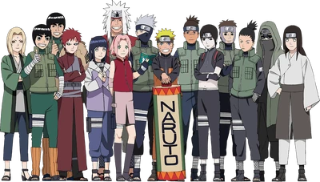
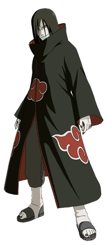
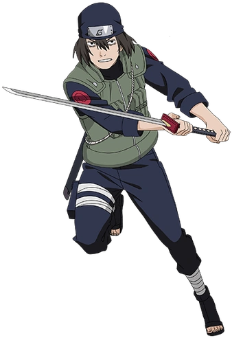
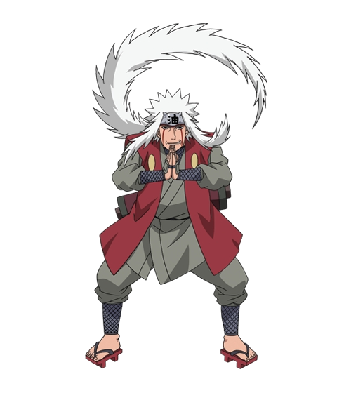
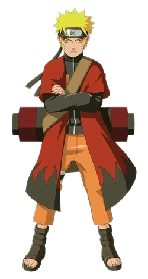
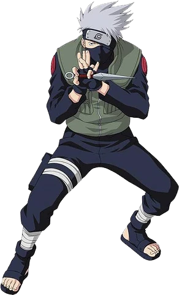

War Rules
- All matches will be 3/5. Meaning first person too get 3 wins in a set wins
- Copying the opponent's team is against the rules. (2/3 characters)
- If you disconnect, your game bugs, or is impaired for any other reason after 2 turns then your opponent wins unless you both consent to a rematch. (PLEASE PROVIDE SCREENSHOTS)
- You may only use the same team once in a set, and cant use the same 2/3 characters again in one set
- No full chakra drain, counter/reflect, stun, AoE (Offensive), or healing teams.
- Young Kakashi/Hanabi count as stunners. Itachi Body double & Karin is counted as Aoe & Sage Naruto is counted as a counter/Stun/Aoe/healing. Example of a banned team - Shikamaru, Sakura & Kushina as there is 3 people who can stun. Sage Naruto, Kakashi, Yondaime Kakashi would also be banned as 3 characters can counter/reflect. Only 2 max can be used of anything. A suitable example team would be Rin, Ten ten, Sakura (only 2 healers, 1 aoe, 1 stun)
- If an opponent uses a banned character or banned team, the match is voided, and you rematch. However if it happens again the person automatically loses the match. (PLEASE PROVIDE SCREENSHOTS)
- Any characters released after the start of this tournament is banned.
- Any further questions can be asked too TrillzMMA

Banlist
Akamichi Chouji,
Akatsuki Orochimaru,
Alliance Gai,
Alliance Hinata,
Alliance Lee,
Alliance Sai,
Alliance Temari,
Alliance Tsunade,
Butterfly Chouji,
Commander Darui,
Cursed Seal Kimimaro,
Danzo,
Ebisu,
Edo Tensei Hiruzen,
Edo Tensei Kyuubi Kinkaku,
Edo Tensei Kyuuni Minato,
Edo Tensei Madara,
Edo Tensei Nagato,
Edo Tensei Nidaime Tobirama,
Edo Tensei Utakata,
Edo Tensei Yota,
Gaara,
Guruguru Obito,
Haku,
Haruno Sakura (TL),
Juubi,
Kaguya,
Kakko,
Rehabilitated Karin,
Ressurrected Madara,
Rikudou Hamura,
Rikudou Madara,
Rikudou Naruto,
Rikudou Sasuke,
Sage Kabuto,
Sage Kuruma Naruto,
Second Stage Cursed Seal Sasuke,
Senju Hashirama,
True Artist Deidara,
Otsutsuki Asura,
Otsutsuki Hagoromo,
Uchiha Fugaku,
Uchiha Naka,
Uchiha Naori,
Uzumaki Nagato,
Yamanaka Ino,
Young Nagato,
Any Tailed Beasts,
Any New Generation Boruto Characters

Format
- 12 player round robin tournament
- 2 Groups A & B of 6 players - Top 2 players in each group will be put into a semi final tournament bracket
- Semi final bracket will be seeded #1 player group A vs #2 player group b & #1 player group B vs #2 player Group A. There would be a third place match up for the two losers in semi finals.
- Everyone plays eachother once in a set of 3/5 in the group stage
- Everyone plays eachother once in the knockout tournament stages
- The Winner of each match MUST message TrillzMMA (discord name), so he can log all the matches down and reward the points. The logs of each match and Points earned for each group will be shown after everyone has played eachother in their group.
- You get one point for winning a set match in the group stage. If you win 3 0 you can earn a extra point. E.g. Sage 3 vs Kraze 0 Will earn Sage 2 points for the win. Sage winning 3-1 would only reward him 1 point.

Rewards
- Everyone selected too particiape will earn 1 character
- 3rd place of each group will earn 1 character
- 2nd Place of each group will earn 2 characters
- 1st Place of each group will earn 3 characters
- 3rd place will earn 1 characters
- 2nd Place will earn 3 characters
- 1st place will earn 6 characters
- Earning 1st place in your group and then winning the tournament can earn you up too a amount of 10 characters
- 1st place, 2nd place & 3rd place players will automatically join the Midnight Sage Clan War Team and will be granted access too the War Headquarters. We will then face other clans top war players too show our skills.
- All rewards will be rewarded after the tournament. Message Natsu or TrillzMMA to discuss what characters you would want
Knockout stage rewards

Register
- Too be at least S-rank
- Have a win ratio of at least 60%+ with a minimum of 70 games played
- Have a highest streak of at least 15+
Too Apply you must have be at least one of these achievements

Other
- If there is more then 12 participants that apply, TrillzMMA will choose 12. If there is less then 12, the tournament will be Turned into a 8 player tournament.
- If Joining this tournament please you will need too try and play others or risk fofeiting a loss. ( No dodging will be allowed)
- Everyone has 12 days too apply from when this has been posted
- All selected Participants will be invited too a War Tournament room where it would be easier too set up playing eachother when groups have been announced. Also TrillzMMA can remind players that they need too play
